原文连接:https://www.cnblogs.com/noneplus/p/11539570.html
关于Redis缓存
为什么使用缓存？
提升重复访问数据的访问效率。
Redis的三个用途
数据库，缓存，消息中间件
Redis的应用场景（针对被重复访问的数据）
- 页面缓存（图片，CSS，html等静态数据）——热点数据
- 最新列表
- 排行榜
- 计数器
- session存储
使用建议
- Redis 速度快是建立在内存数据库基础上的，但是一台服务器的内存要比磁盘金贵许多，所以在项目初期不要想什么都往 Redis 里放，这样当数据量上来后很快内存就会不够用，反而得不偿失。合理的利用有限的内存，将读（写）频繁的热数据放在 Redis 中才能更好感受到它带来的性能提升。
- Redis 虽然提供了
RDB和AOF两种持久化方式，但是普遍还是认为 Redis 的持久化并不是很靠谱。非常重要的数据不要依赖 Redis 来开发，或者最起码不要只在 Redis 中持久化 - MySQL 经过不断优化性能已经非常好，所以 MySQL 提供的数据结构和访问效率能满足的需求的情况下不要引入 Redis，多引入一个组件就多一个可能的故障节点，尤其在保持数据一致性的场景中数据（比如用户余额）应该只放在数据库中，除非你知道怎么解决考系统的分布式事务。
Redis数据类型
文档参考：http://doc.redisfans.com/
string（一个键最大能存储 512MB）
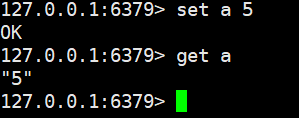
hash（适合存储对象）每个 hash 可以存储 2的32次方 -1个 键值对
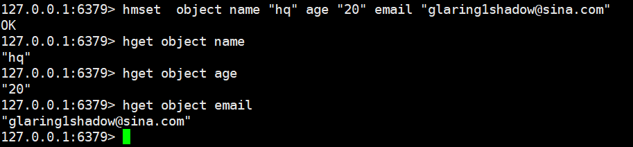
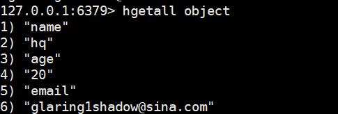
list
list是一个从左至右的队列
lpush从左往右插入元素，最后插入的3在最左边
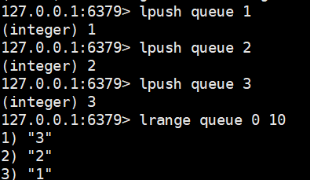
rpush从右往左插入元素，最后插入的元素c在最右边
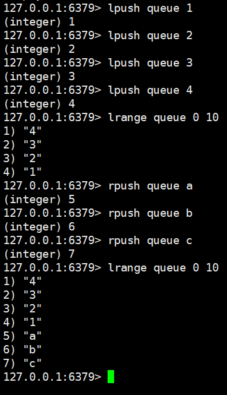
lpop和rpop分别是从左边和右边取出元素并移除
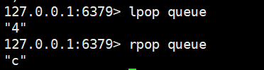
lrange返回指定范围内的元素
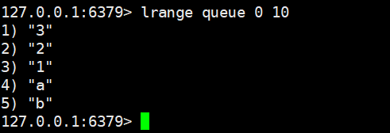
set（无序集合，不允许重复）
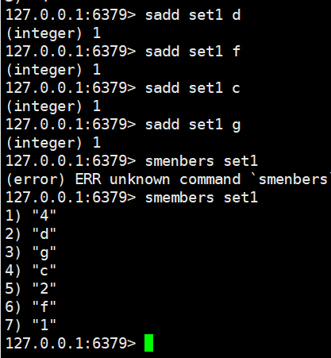
返回集合中元素的个数
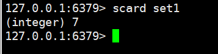
zset
Redis zset 和 set 一样也是string类型元素的集合,且不允许重复的成员。
不同的是每个元素都会关联一个double类型的分数。redis正是通过分数来为集合中的成员进行从小到大的排序。
zset的成员是唯一的,但分数(score)却可以重复。
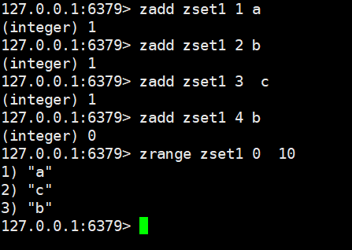
zrange按照score从小到大排列
服务器安装Redis
测试环境：阿里云 CentOS 7.6
官网：
https://redis.io/
安装Redis
wget http://download.redis.io/releases/redis-5.0.5.tar.gz
tar xzf redis-5.0.5.tar.gz
cd redis-5.0.5
make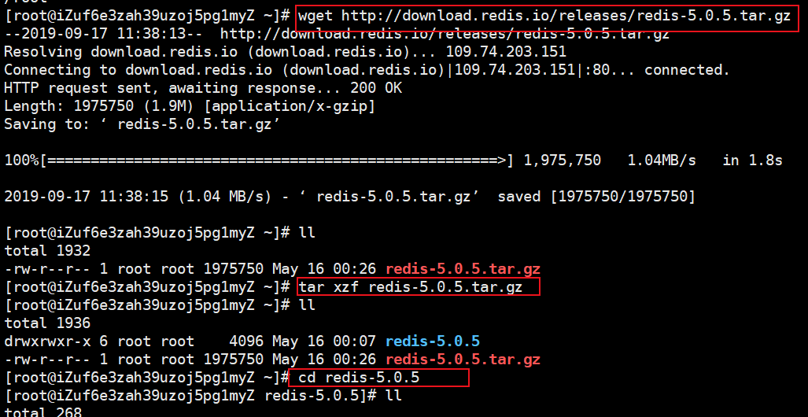
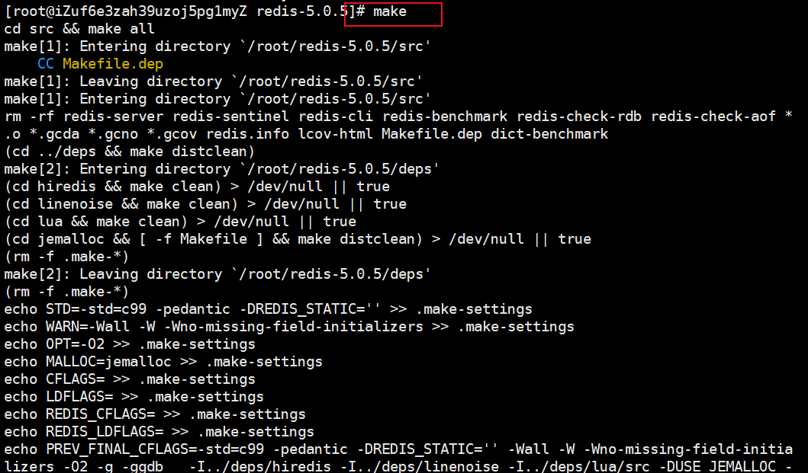
启动关闭Redis
打开src文件夹
./redis-server
./redis-cli shutdown配置Redis远程连接
在redis-5.0.5目录下的redis.conf
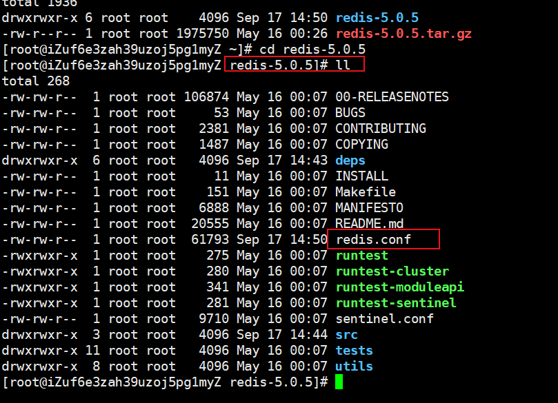
远程连接（注释该行）开启阿里云安全组6379端口
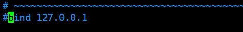
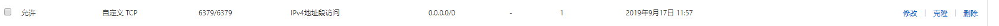
设置密码
开启允许公网访问
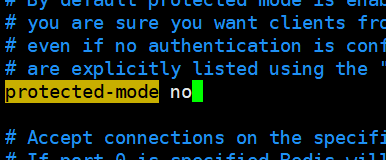
重新启动redis，并加载配置文件
./redis-server ../redis.conf查看配置是否生效
打开src目录
./redis-cli auth "123456" config get *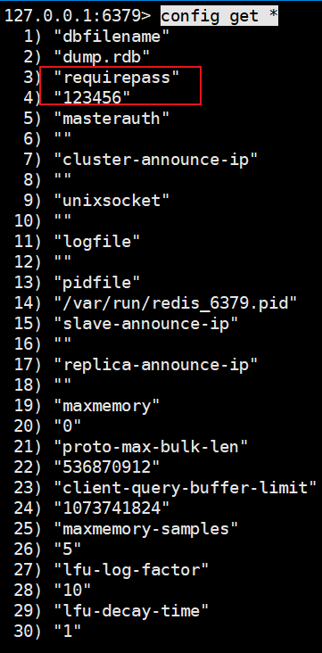
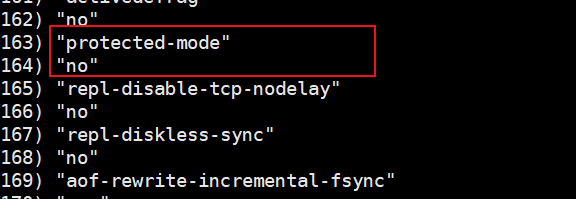
在win10本地用可视化工具连接

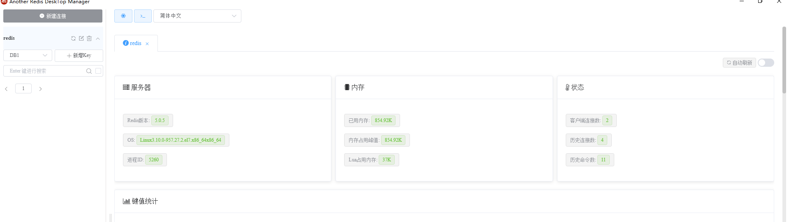
集成Redis
在上次集成Druid的基础上集成Redis
https://www.cnblogs.com/noneplus/p/11532065.html
添加Redis缓存依赖
<dependency> <groupId>org.springframework.boot</groupId> <artifactId>spring-boot-starter-data-redis</artifactId> </dependency> <dependency> <groupId>org.springframework.boot</groupId> <artifactId>spring-boot-start-cache</artifactId></dependency> </dependency>配置yaml
spring: datasource: # 数据源基本配置 username: noneplus password: MEMMpYHaOUFVuaR37bMbUmGW76WVSLAD7pnFLrbup5H4Q6sZvWMDsYAcnZvAL2hY2Man1rc6SCJMYwrse1xPKw== # 1.配置生成的password driver-class-name: com.mysql.cj.jdbc.Driver url: jdbc:mysql://47.103.6.247:3306/user?serverTimezone=UTC type: com.alibaba.druid.pool.DruidDataSource # Druid数据源配置 initialSize: 5 minIdle: 5 maxActive: 20 maxWait: 60000 timeBetweenEvictionRunsMillis: 60000 minEvictableIdleTimeMillis: 300000 validationQuery: SELECT 1 FROM DUAL testWhileIdle: true testOnBorrow: false testOnReturn: false poolPreparedStatements: true # 配置监控统计拦截的filters，去掉后监控界面sql无法统计，'wall'用于防火墙 filters: stat,wall,log4j,config # 3.添加config maxPoolPreparedStatementPerConnectionSize: 20 useGlobalDataSourceStat: true # 2.开启加密，配置公钥 connectionProperties: druid.stat.mergeSql=true;druid.stat.slowSqlMillis=500;config.decrypt=true;config.decrypt.key=MFwwDQYJKoZIhvcNAQEBBQADSwAwSAJBAIIl9Pp9nYiIsVgEgOuNqqyPIU6NsYNSyLX3gxcBhIPRtcL5WqxevYKvsAwaT4WOtww268vHdyP7zWTGhtGxscMCAwEAAQ== thymeleaf: cache: false redis: host: 47.103.6.247 port: 6379 password: 123456 pagehelper: helperDialect: mysql reasonable: true supportMethodsArguments: true pageSizeZero: false #pageSize=0测试是否可以正常连接到redis
@Autowired StringRedisTemplate stringRedisTemplate; @Test public void testRedis() { stringRedisTemplate.opsForValue().append("ms","hello"); }
单条数据缓存
主程序类添加@EnableCaching注解
配置Redis序列化
package zkrun.top.web.config; import com.fasterxml.jackson.annotation.JsonAutoDetect; import com.fasterxml.jackson.annotation.PropertyAccessor; import com.fasterxml.jackson.databind.ObjectMapper; import org.springframework.cache.CacheManager; import org.springframework.cache.annotation.EnableCaching; import org.springframework.context.annotation.Bean; import org.springframework.context.annotation.Configuration; import org.springframework.data.redis.cache.RedisCacheConfiguration; import org.springframework.data.redis.cache.RedisCacheManager; import org.springframework.data.redis.connection.RedisConnectionFactory; import org.springframework.data.redis.core.RedisTemplate; import org.springframework.data.redis.serializer.Jackson2JsonRedisSerializer; import org.springframework.data.redis.serializer.RedisSerializationContext; import org.springframework.data.redis.serializer.RedisSerializer; import org.springframework.data.redis.serializer.StringRedisSerializer; import java.time.Duration; @Configuration @EnableCaching public class RedisConfig { @Bean public RedisTemplate<String, Object> redisTemplate(RedisConnectionFactory factory) { RedisTemplate<String, Object> redisTemplate = new RedisTemplate<>(); redisTemplate.setConnectionFactory(factory); // 使用Jackson2JsonRedisSerialize 替换默认序列化 Jackson2JsonRedisSerializer jackson2JsonRedisSerializer = new Jackson2JsonRedisSerializer(Object.class); ObjectMapper objectMapper = new ObjectMapper(); objectMapper.setVisibility(PropertyAccessor.ALL, JsonAutoDetect.Visibility.ANY); objectMapper.enableDefaultTyping(ObjectMapper.DefaultTyping.NON_FINAL); jackson2JsonRedisSerializer.setObjectMapper(objectMapper); // 设置value的序列化规则和 key的序列化规则 redisTemplate.setKeySerializer(new StringRedisSerializer()); redisTemplate.setValueSerializer(jackson2JsonRedisSerializer); redisTemplate.setHashKeySerializer(new StringRedisSerializer()); redisTemplate.setHashValueSerializer(jackson2JsonRedisSerializer); redisTemplate.afterPropertiesSet(); return redisTemplate; } @Bean public CacheManager cacheManager(RedisConnectionFactory factory) { RedisSerializer<String> redisSerializer = new StringRedisSerializer(); Jackson2JsonRedisSerializer jackson2JsonRedisSerializer = new Jackson2JsonRedisSerializer(Object.class); //解决查询缓存转换异常的问题 ObjectMapper om = new ObjectMapper(); om.setVisibility(PropertyAccessor.ALL, JsonAutoDetect.Visibility.ANY); om.enableDefaultTyping(ObjectMapper.DefaultTyping.NON_FINAL); jackson2JsonRedisSerializer.setObjectMapper(om); // 配置序列化（解决乱码的问题）,过期时间30秒 RedisCacheConfiguration config = RedisCacheConfiguration.defaultCacheConfig() .entryTtl(Duration.ofSeconds(1800000)) .serializeKeysWith(RedisSerializationContext.SerializationPair.fromSerializer(redisSerializer)) .serializeValuesWith(RedisSerializationContext.SerializationPair.fromSerializer(jackson2JsonRedisSerializer)) .disableCachingNullValues(); RedisCacheManager cacheManager = RedisCacheManager.builder(factory) .cacheDefaults(config) .build(); return cacheManager; } }创建RedisController类
@Autowired RedisService redisService; @RequestMapping("/get") @ResponseBody public String get(Integer id) { return redisService.getUserById(id); } @RequestMapping("/update") @ResponseBody public UserInfo update(UserInfo userInfo) { return redisService.updateUser(userInfo); } @RequestMapping("/deleteCache") @ResponseBody public String delete(Integer id) { return redisService.deleteUser(id); }RedisService(其中，缓存注解放在Service层)
@Cacheable产生缓存
@CachePut更新缓存
@CacheEvict删除缓存
package zkrun.top.web.service; import org.springframework.beans.factory.annotation.Autowired; import org.springframework.cache.annotation.CacheEvict; import org.springframework.cache.annotation.CachePut; import org.springframework.cache.annotation.Cacheable; import org.springframework.stereotype.Service; import zkrun.top.web.bean.UserInfo; import zkrun.top.web.mapper.UserInfoMapper; @Service public class RedisService { @Autowired UserInfoMapper userInfoMapper; /**将方法运行结果进行缓存，当方法被再次调用时，直接返回缓存中的结果。 * 参数： * value：指定缓存组件的名字 * key：缓存的key。可以使用SpEl表达式 * condition：缓存条件。（为true时缓存），使用EL表达式 * unless：否定缓存。（为true时不缓存）unless在方法执行之后判断，所以unless可以用结 果作为判断条件。 * @param id * @return */ @Cacheable(value = "test", key = "#id") public String getUserById(Integer id) { UserInfo userInfo=userInfoMapper.getUserById(id); return userInfo.toString(); } //修改了数据库的数据，同时更新缓存。先调用目标方法，然后缓存方法结果。 @CachePut(value = "test",key="#result.id") //只能是result.id public UserInfo updateUser(UserInfo userInfo) { userInfoMapper.updateUser(userInfo); return userInfo; } //删除数据之后，清除缓存 @CacheEvict(value = "test", key = "#id") public String deleteUser(Integer id) { userInfoMapper.deleteUserById(id); return "已删除"; } }
测试
查询id=60的数据
http://localhost:8080/get?id=60
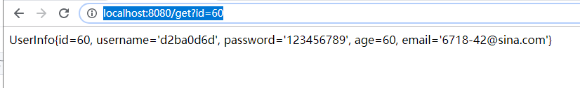
缓存已生成
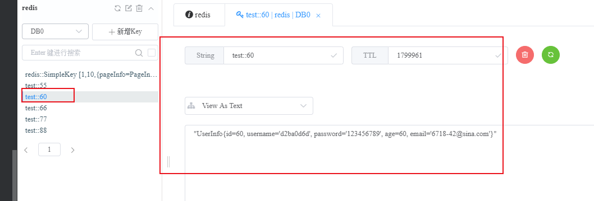
更新id=60的数据
http://localhost:8080/update?id=60&username=60
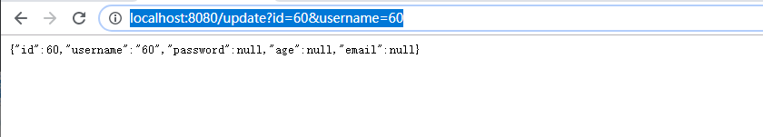
缓存已更新
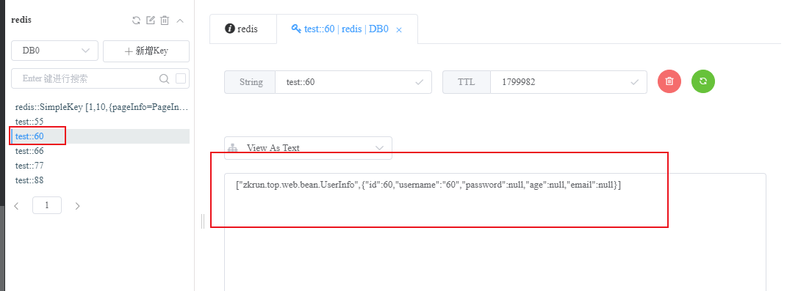
数据库已更新
删除id=60的数据
http://localhost:8080/deleteCache?id=60
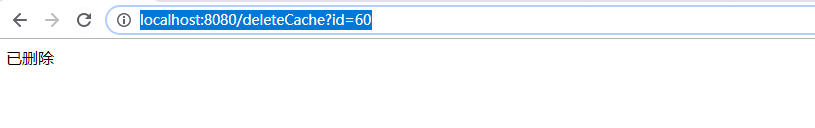
緩存已清空
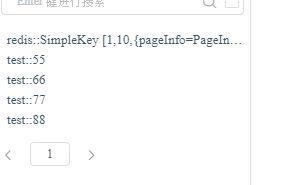
数据库已删除